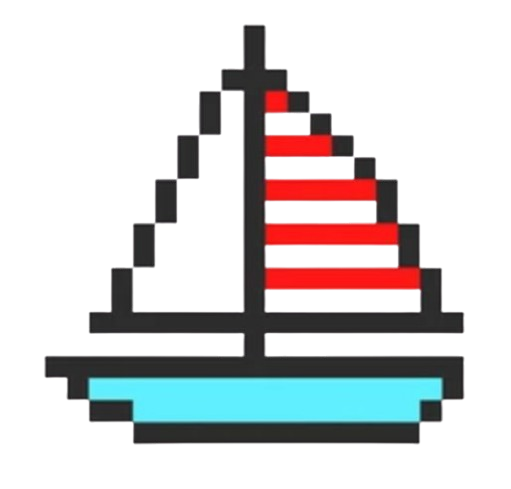

Hi! I'm Ayush. I'm studying Computer Science and Engineering at PES University, Bangalore, India.
I'm passionate about Machine Learning, Databases, Distributed systems and Computer Networks. I also enjoy picking up new languages to learn, with my most recent endeavour being Go.
This will be a space to document all the work I am doing, as well as some cool things I come across on the internet.
I am currently focused on Systems Programming (Rust/C++) and Database Internals. I was previously a Research Intern at The Innovation Lab, where I worked on a subgraph search pipeline based on Graph Neural Networks.
Building a distributed, eventually-consistent key-value store from scratch. Implementing leaderless replication and conflict resolution using CRDTs (PNCounter, LWWSet) to handle network partitions.
A file compression CLI utility written in C. Implements the Huffman coding algorithm for efficient lossless compression and features a custom Homebrew tap for distribution.
A lightweight HTTP protocol implementation with support for html, json and text parsing.